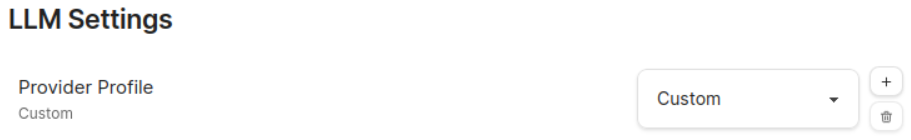

YandexGPT в Obsidian TextGenerator
Для того чтобы работать с API YandexGPT необходимо быть зарегистрированным в Yandex Cloud и иметь действующий платежный аккаунт.
Для авторизации в API потребуется либо IAM токен либо API ключ.
Obsidian
- Установить плагин TextGenerator
- Выбрать
Provider Profile-Customили клонировать его нажав+ - В поле
Endpointуказатьhttps://llm.api.cloud.yandex.net/foundationModels/v1/completion - В поле
API Keyуказать либо IAM_TOKEN либо API ключ полученный ранее
Advanced mode
Дальнейшие пункты настраиваются после включения переключателя Advanced mode.
- В секции
Headersуказываем следующее при использовании ключа API.
{
"Content-Type": "application/json",
"Authorization": "Api-Key {{api_key}}",
"x-folder-id": "b1gjpq05r3ppsou34c7d"
}Или вот так при при использовании IAM токена:
{
"Content-Type": "application/json",
"Authorization": "Bearer {{api_key}}",
"x-folder-id": "b1gjpq05r3ppsou34c7d"
}В x-folder-id необходимо подставить идентификатор того каталога для которого создавался ключ/токен.
- В секции
Bodyпропишем тело запроса.
{
"modelUri": "gpt://b1gjpq05r3ppsou34c7d/yandexgpt/latest",
"completionOptions": {
"stream": false,
"temperature": {{temperature}},
"maxTokens": {{max_tokens}}
},
"messages": [{"text": {{stringify tg_selection}}, "role":"user"}]
}Где
modelUriэто адрес модели выключающий в себя идентификатор каталога из шагов выше. Список существующих моделей можно посмотреть тут.temperature- температура запроса. В спискеmessagesвозможно стоит определить роль модели. Что-то типа:
Ты AI асистент встроенный в Obsidian. Твоё назначение помогать создавать и редактировать статьи внутри PKM.
- В секции
Response Sanatizationпрописываем обработчик ответов API:
if (res.status >= 300) {
const err = data?.error?.message || JSON.stringify(data);
throw err;
}
const choices = data.result.alternatives.map(c => ({ content: c.message.text }));
return choices;- Обязательно устанавливаем галочку
CORS Bypass
Экспортированный профиль
TextGenerator поддерживает импорт-экспорт профилей. Ниже приведен сохраненный результат описывающий действия выше.
{
id: 'Default (Custom) 2',
profile: {
extends: 'Default (Custom)',
name: 'YandexGPT',
},
config: {
endpoint: 'https://llm.api.cloud.yandex.net/foundationModels/v1/completion',
custom_header: '{\n "Content-Type": "application/json",\n "Authorization": "Api-Key {{api_key}}", \n"x-folder-id": "b1gjpq05r3ppsou34c7d"\n}',
custom_body: '{\n "modelUri": "gpt://b1gjpq05r3ppsou34c7d/yandexgpt/latest",\n "completionOptions": {\n "stream": false,\n "temperature": {{temperature}},\n "maxTokens": {{max_tokens}}\n },\n "messages": [{"text": {{stringify tg_selection}}, "role":"user"}] \n}\n',
model: 'gpt-3.5-turbo-16k',
sanatization_streaming: '// catch error\nif (res.status >= 300) {\n const err = data?.error?.message || JSON.stringify(data);\n throw err;\n}\nlet resultText = "";\nconst lines = chunk.split("\ndata: ");\n\nconst parsedLines = lines\n .map((line) => line.replace(/^data: /, "").trim()) // Remove the "data: " prefix\n .filter((line) => line !== "" && line !== "[DONE]") // Remove empty lines and "[DONE]"\n .map((line) => {\n try {\n return JSON.parse(line)\n } catch { }\n }) // Parse the JSON string\n .filter(Boolean);\n\nfor (const parsedLine of parsedLines) {\n const { choices } = parsedLine;\n const { delta } = choices[0];\n const { content } = delta;\n // Update the UI with the new content\n if (content) {\n resultText += content;\n }\n}\nreturn resultText;',
sanatization_response: 'if (res.status >= 300) {\n const err = data?.error?.message || JSON.stringify(data);\n throw err;\n}\n\nconst choices = data.result.alternatives.map(c => ({ content: c.message.text }));\n\nreturn choices;',
frequency_penalty: 0,
presence_penalty: 0.5,
top_p: 1,
CORSBypass: true,
streamable: false,
api_key: '',
},
}